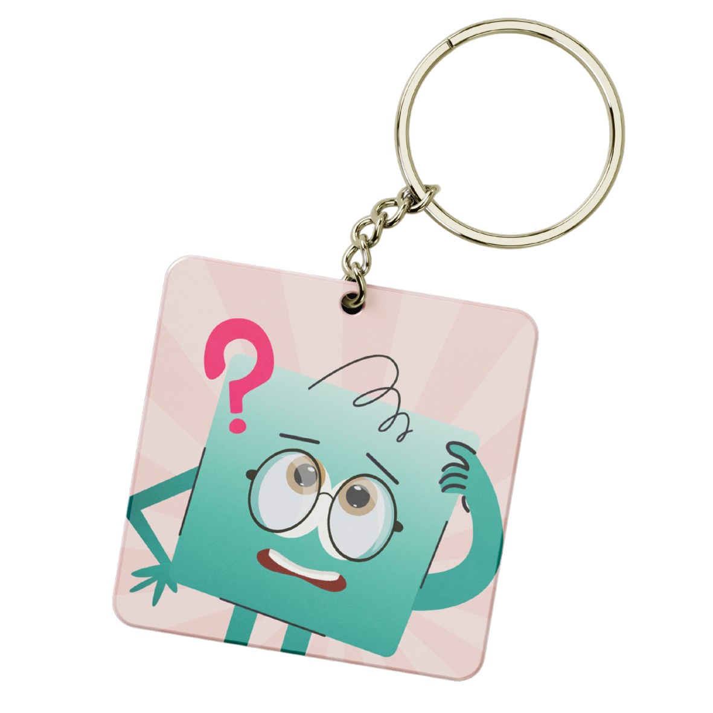
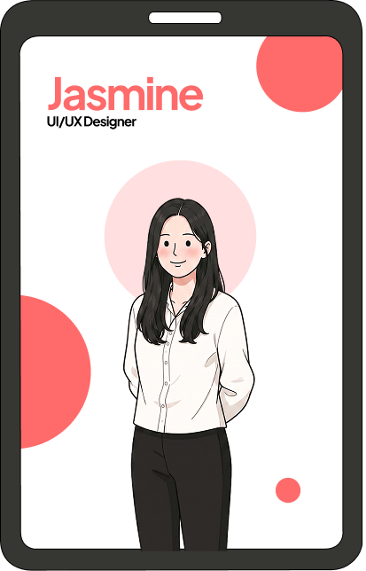
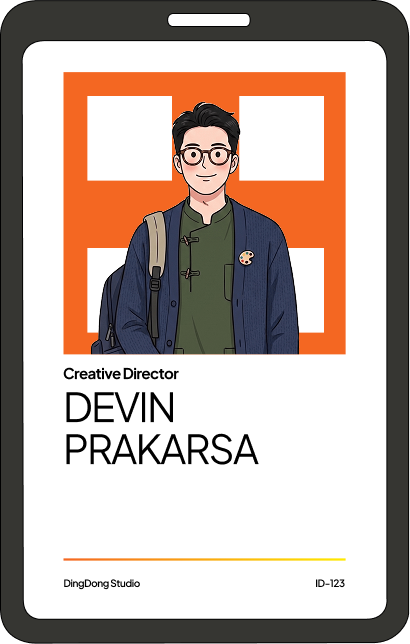

Setiap benda punya cerita. Sekarang, biarkan mereka menceritakannya.
Scan, tonton, dan berinteraksi. Hubungkan aksesori fisikmu dengan cerita digital yang interaktif dalam satu langkah mudah.



What is POP?
POP adalah platform Physical-to-Digital Experience yang mengubah
benda sehari-hari menjadi gerbang menuju memori interaktif. Kita nggak cuma jual aksesoris, kita jual cara
baru untuk mengenang sesuatu.
Pake teknologi Image Tracking AR, POP memungkinkan barang-barang fisik—seperti ID card, bingkai foto
pernikahan, atau kado spesial—buat "berbicara" langsung di layar HP kamu.
How it Works?
Buka Website POP untuk scan target yang ada pada produk.
Di halaman catalog pilih produk yang kamu miliki.
Ketika kamera terbuka, Arahkan kamera pada produk.